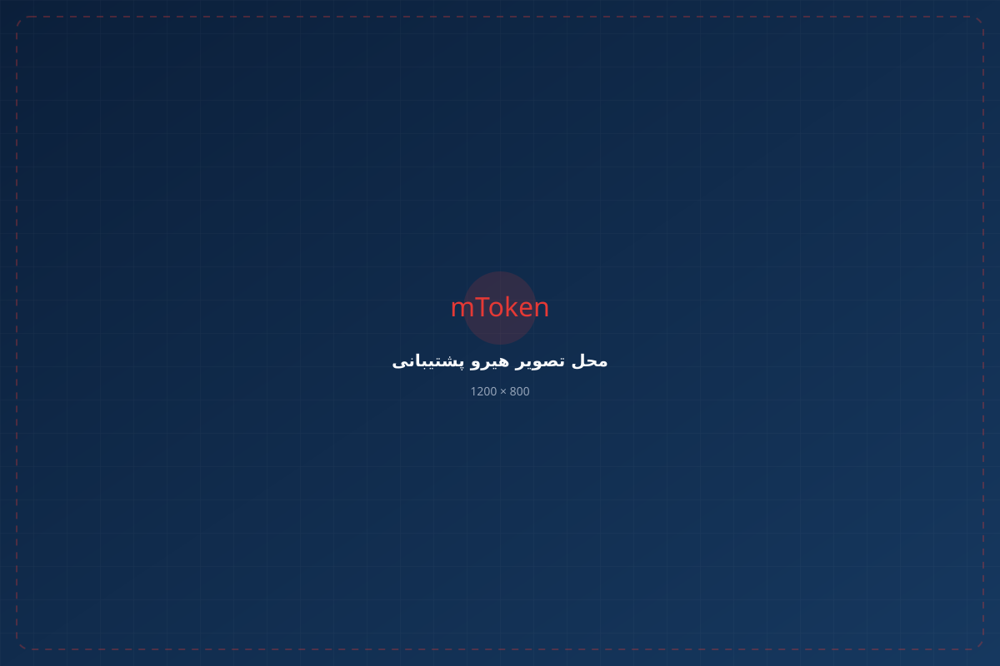
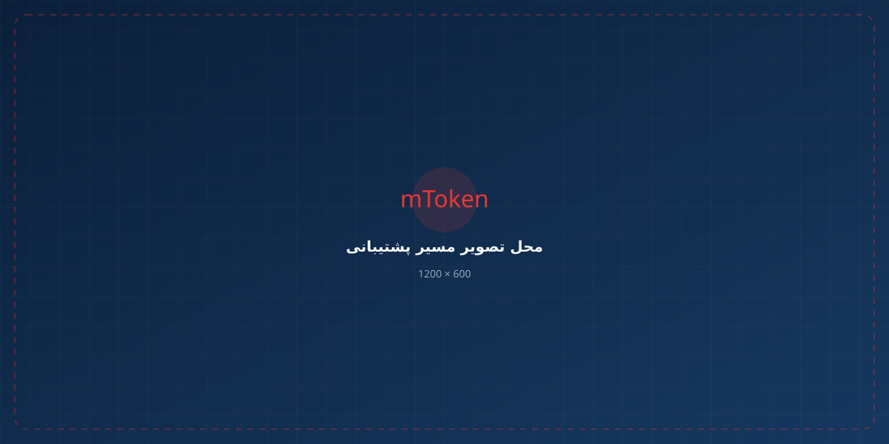

✓
صدور گواهی دیجیتال
ثبت درخواست، احراز هویت و صدور گواهی امضای دیجیتال.
مشاهده خدمت ←از صدور و تمدید گواهی دیجیتال تا راهاندازی توکن، تنظیمات سامانهها و خدمات VIP؛ همه مراحل را با همراهی کارشناسان متخصص انجام دهید.

خدمت موردنیاز خود را انتخاب کنید و در صورت نیاز، از همراهی کارشناسان ما استفاده کنید.
ثبت درخواست، احراز هویت و صدور گواهی امضای دیجیتال.
مشاهده خدمت ←تمدید گواهی و آمادهسازی برای استفاده بدون وقفه.
مشاهده خدمت ←تولید و آمادهسازی CSR برای گواهیهای موردنیاز سامانهها.
مشاهده خدمت ←راهاندازی توکن، نصب نرمافزارها و تنظیمات موردنیاز.
مشاهده خدمت ←همراهی ویژه برای انجام سادهتر و سریعتر مراحل.
مشاهده خدمت ←تهیه توکن اصلی K3 همراه با خدمات نصب و راهاندازی.
مشاهده و خرید ←راهنمایی، راهاندازی و خدمات تخصصی موردنیاز برای استفاده از امضای دیجیتال.
برای زمانی که سرعت، دقت و همراهی تخصصی برای شما اهمیت دارد.
توکن Mtoken K3 برای استفاده در سامانههای مختلف مبتنی بر امضای دیجیتال ارائه میشود و در کنار آن، خدمات نصب، راهاندازی و پشتیبانی تخصصی نیز در دسترس است.
مشاهده و خرید توکن K3 راهنمای راهاندازیتوکن سختافزاری امضای دیجیتال
فرآیند را ساده کردهایم تا از ثبت درخواست تا راهاندازی، مسیر مشخصی داشته باشید.
خدمت موردنیاز خود را انتخاب کنید.
کارشناس شرایط و نیاز شما را بررسی میکند.
مراحل موردنیاز خدمت انجام میشود.
تا تکمیل فرآیند همراه شما هستیم.

تمرکز ما روی ارائه یک تجربه ساده، تخصصی و قابل اتکاست.
تمرکز بر گواهی، توکن و امضای دیجیتال.
راهنمایی و همراهی در مراحل موردنیاز.
انجام سریع و دقیق مراحل خدمات.
پشتیبانی تخصصی برای راهاندازی و استفاده.
آموزشهای کاربردی برای نصب و راهاندازی توکن، مدیریت گواهی امضای دیجیتال، استفاده از امضای الکترونیکی در سامانهها و رفع خطاهای متداول.
آموزش نصب درایور و نرمافزار توکن امضای دیجیتال، اتصال توکن به سیستم و آمادهسازی آن برای استفاده.
مشاهده راهنمای نصب ←آموزش مدیریت گواهی دیجیتال، بررسی گواهیهای موجود روی توکن، تمدید و استفاده صحیح از گواهی امضای الکترونیکی.
مشاهده راهنمای گواهی ←راهنمای استفاده از توکن و گواهی امضای دیجیتال در سامانههای مختلف و آموزش مراحل انجام امضای الکترونیکی.
مشاهده آموزش سامانهها ←راهکارهای سریع برای مشکلاتی مانند شناسایی نشدن توکن، خطای PIN، نصب نبودن CSP و خطاهای هنگام امضای دیجیتال.
مشاهده راهکارها ←آموزشها و راهنماهای کاربردی برای استفاده آسانتر از گواهی و توکن امضای دیجیتال.
نصب توکن و نرمافزارهای موردنیاز.
مشاهده راهنما ←صدور، تمدید و مدیریت گواهی.
مشاهده راهنما ←آموزش استفاده از امضای دیجیتال در سامانهها.
مشاهده راهنما ←پاسخ پرسشها و راهکارهای مسائل متداول.
ورود به پایگاه دانش ←برای صدور، تمدید، راهاندازی یا دریافت راهنمایی با کارشناسان ما در ارتباط باشید.